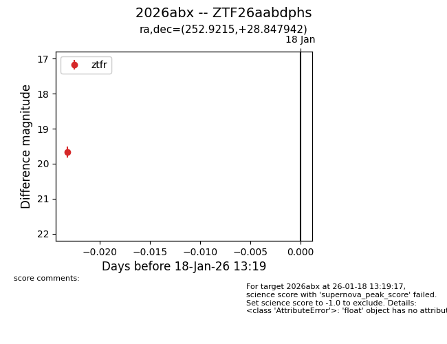
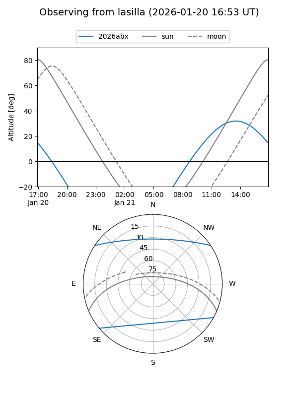
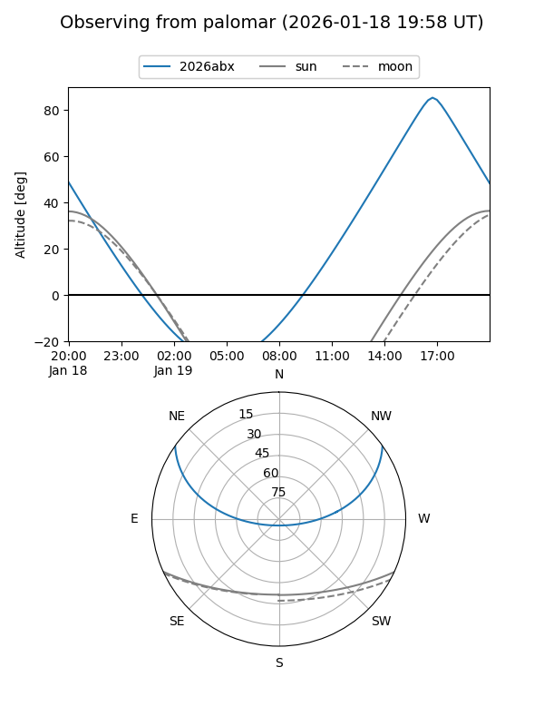
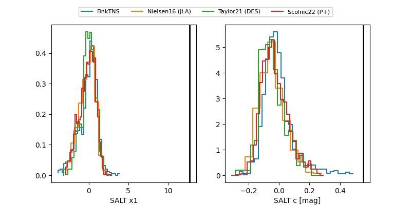

2026abx
Target 2026abx at 2026-01-18 21:16
Aliases and brokers:
FINK: link
Lasair: link
ALeRCE: link
TNS: link
YSE: link
alt names
ZTF26aabdphs (ztf,fink_ztf)
2026abx (tns,yse)
Coordinates:
equatorial (ra, dec) = 252.9215,+28.84794
equatorial (HMS+DMS) = 16:51:41.16,+28:50:52.59
galactic (l, b) = (49.7955,+37.52060)
Flags:
Photometry:
last ztfr=19.67
2 ztfr detections
Lightcurve

Visibility


Additional plots
